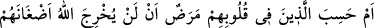
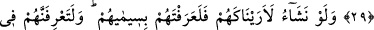
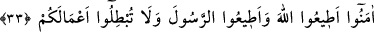
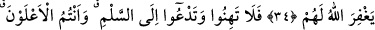

KALPLERİNDE
MARAZ OLANLARIN
KİNLERİ
29. Yoksa kalblerinde hastalık bulunanlar, Allah’ın, kendilerinin kinlerini ortaya
çıkarmayacağını mı sandılar?
30. Biz dileseydik onları sana gösterirdik de sen onları sîmalarından tanırdın.
Andolsun ki sen onları sözlerinin üslûbundan tanırsın. Allah yaptığınız işleri bilir.
31. Andolsun biz sizi deneyeceğiz ki, içinizden cihâd edenleri, (güçlüklere)
sabredenleri bilelim ve söylediğiniz sözlerin (doğru olup olmadığını) sınayalım.
32. Nankörlük edip Allah yoluna engel olanlar ve kendilerine doğru yol belli
olduktan sonra Peygamber’i incitenler Allah’a hiçbir zarar veremezler. Allah
onların işlerini boşa çıkaracaktır.
33. Ey inananlar, Allah’a itâat edin, Peygamber’e itâat edin, işlerinizi boşa
çıkarmayın.
34. İnkâr ve nankörlük edip Allah yoluna engel olan, sonra kâfir olarak ölenleri
Allah affetmeyecektir.
35. Siz gâlip durumda iken gevşeyip barış istemeyin. Allah sizinle beraberdir, O
sizin amellerinizi zâyi etmeyecektir.